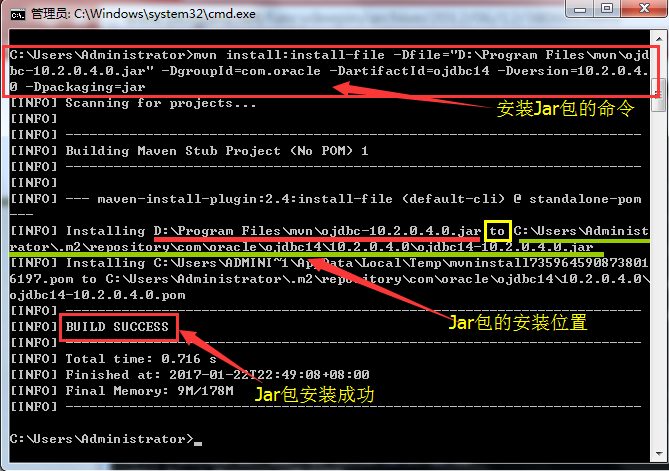

Maven概述
Maven的安装
- 下载
- 解压
- 配置环境变量
-- M2_HOME E:\Drivers\YX\test\apache-maven-3.6.3
-- Path %M2_HOME%\bin; - 查看安装成功与否
mvn -v
Maven仓库
！(本地仓库-远程仓库|私服--中央仓库)[]
更改本地仓库配置，阿里云的仓库镜像，使得下载速度更快
Maven配置文件（带翻译）
"E:\Drivers\apache-maven-3.5.4\conf\settings.xml"
<?xml version="1.0" encoding="UTF-8"?>
<!--
Licensed to the Apache Software Foundation (ASF) under one
or more contributor license agreements. See the NOTICE file
distributed with this work for additional information
regarding copyright ownership. The ASF licenses this file
to you under the Apache License, Version 2.0 (the
"License"); you may not use this file except in compliance
with the License. You may obtain a copy of the License at
http://www.apache.org/licenses/LICENSE-2.0
Unless required by applicable law or agreed to in writing,
software distributed under the License is distributed on an
"AS IS" BASIS, WITHOUT WARRANTIES OR CONDITIONS OF ANY
KIND, either express or implied. See the License for the
specific language governing permissions and limitations
under the License.
-->
<!--
| This is the configuration file for Maven. It can be specified at two levels:
|
| 1. User Level. This settings.xml file provides configuration for a single user,
| and is normally provided in ${user.home}/.m2/settings.xml.
|
| NOTE: This location can be overridden with the CLI option:
|
| -s /path/to/user/settings.xml
|
| 2. Global Level. This settings.xml file provides configuration for all Maven
| users on a machine (assuming they're all using the same Maven
| installation). It's normally provided in
| ${maven.conf}/settings.xml.
|
| NOTE: This location can be overridden with the CLI option:
|
| -gs /path/to/global/settings.xml
|
| The sections in this sample file are intended to give you a running start at
| getting the most out of your Maven installation. Where appropriate, the default
| values (values used when the setting is not specified) are provided.
|
|-->
<settings xmlns="http://maven.apache.org/SETTINGS/1.0.0"
xmlns:xsi="http://www.w3.org/2001/XMLSchema-instance"
xsi:schemaLocation="http://maven.apache.org/SETTINGS/1.0.0 http://maven.apache.org/xsd/settings-1.0.0.xsd">
<!-- localRepository
| The path to the local repository maven will use to store artifacts.
|
| Default: ${user.home}/.m2/repository
<localRepository>/path/to/local/repo</localRepository>
<localRepository>E:\MavenRepository</localRepository>
-->
<localRepository>E:\MavenRepository</localRepository>
<!-- interactiveMode
| This will determine whether maven prompts you when it needs input. If set to false,
| maven will use a sensible default value, perhaps based on some other setting, for
| the parameter in question.
|
| Default: true
<interactiveMode>true</interactiveMode>
-->
<!-- offline
| Determines whether maven should attempt to connect to the network when executing a build.
| This will have an effect on artifact downloads, artifact deployment, and others.
|
| Default: false
<offline>false</offline>
-->
<!-- pluginGroups
| This is a list of additional group identifiers that will be searched when resolving plugins by their prefix, i.e.
| when invoking a command line like "mvn prefix:goal". Maven will automatically add the group identifiers
| "org.apache.maven.plugins" and "org.codehaus.mojo" if these are not already contained in the list.
|-->
<pluginGroups>
<!-- pluginGroup
| Specifies a further group identifier to use for plugin lookup.
<pluginGroup>com.your.plugins</pluginGroup>
-->
</pluginGroups>
<!-- proxies
| This is a list of proxies which can be used on this machine to connect to the network.
| Unless otherwise specified (by system property or command-line switch), the first proxy
| specification in this list marked as active will be used.
|-->
<proxies>
<!-- proxy
| Specification for one proxy, to be used in connecting to the network.
|
<proxy>
<id>optional</id>
<active>true</active>
<protocol>http</protocol>
<username>proxyuser</username>
<password>proxypass</password>
<host>proxy.host.net</host>
<port>80</port>
<nonProxyHosts>local.net|some.host.com</nonProxyHosts>
</proxy>
-->
</proxies>
<!-- servers
| This is a list of authentication profiles, keyed by the server-id used within the system.
| Authentication profiles can be used whenever maven must make a connection to a remote server.
|-->
<servers>
<!-- server
| Specifies the authentication information to use when connecting to a particular server, identified by
| a unique name within the system (referred to by the 'id' attribute below).
|
| NOTE: You should either specify username/password OR privateKey/passphrase, since these pairings are
| used together.
|
<server>
<id>deploymentRepo</id>
<username>repouser</username>
<password>repopwd</password>
</server>
-->
<!-- Another sample, using keys to authenticate.
<server>
<id>siteServer</id>
<privateKey>/path/to/private/key</privateKey>
<passphrase>optional; leave empty if not used.</passphrase>
</server>
-->
</servers>
<!-- mirrors
| This is a list of mirrors to be used in downloading artifacts from remote repositories.
|
| It works like this: a POM may declare a repository to use in resolving certain artifacts.
| However, this repository may have problems with heavy traffic at times, so people have mirrored
| it to several places.
|
| That repository definition will have a unique id, so we can create a mirror reference for that
| repository, to be used as an alternate download site. The mirror site will be the preferred
| server for that repository.
|-->
<mirrors>
<!-- mirror
| Specifies a repository mirror site to use instead of a given repository. The repository that
| this mirror serves has an ID that matches the mirrorOf element of this mirror. IDs are used
| for inheritance and direct lookup purposes, and must be unique across the set of mirrors.
|
<mirror>
<id>mirrorId</id>
<mirrorOf>repositoryId</mirrorOf>
<name>Human Readable Name for this Mirror.</name>
<url>http://my.repository.com/repo/path</url>
</mirror>
-->
<mirror>
<id>nexus-aliyun</id>
<mirrorOf>central</mirrorOf>
<name>Nexus aliyun</name>
<url>http://maven.aliyun.com/nexus/content/groups/public</url>
</mirror>
</mirrors>
<!-- profiles
| This is a list of profiles which can be activated in a variety of ways, and which can modify
| the build process. Profiles provided in the settings.xml are intended to provide local machine-
| specific paths and repository locations which allow the build to work in the local environment.
|
| For example, if you have an integration testing plugin - like cactus - that needs to know where
| your Tomcat instance is installed, you can provide a variable here such that the variable is
| dereferenced during the build process to configure the cactus plugin.
|
| As noted above, profiles can be activated in a variety of ways. One way - the activeProfiles
| section of this document (settings.xml) - will be discussed later. Another way essentially
| relies on the detection of a system property, either matching a particular value for the property,
| or merely testing its existence. Profiles can also be activated by JDK version prefix, where a
| value of '1.4' might activate a profile when the build is executed on a JDK version of '1.4.2_07'.
| Finally, the list of active profiles can be specified directly from the command line.
|
| NOTE: For profiles defined in the settings.xml, you are restricted to specifying only artifact
| repositories, plugin repositories, and free-form properties to be used as configuration
| variables for plugins in the POM.
|
|-->
<profiles>
<!-- profile
| Specifies a set of introductions to the build process, to be activated using one or more of the
| mechanisms described above. For inheritance purposes, and to activate profiles via <activatedProfiles/>
| or the command line, profiles have to have an ID that is unique.
|
| An encouraged best practice for profile identification is to use a consistent naming convention
| for profiles, such as 'env-dev', 'env-test', 'env-production', 'user-jdcasey', 'user-brett', etc.
| This will make it more intuitive to understand what the set of introduced profiles is attempting
| to accomplish, particularly when you only have a list of profile id's for debug.
|
| This profile example uses the JDK version to trigger activation, and provides a JDK-specific repo.
<profile>
<id>jdk-1.4</id>
<activation>
<jdk>1.4</jdk>
</activation>
<repositories>
<repository>
<id>jdk14</id>
<name>Repository for JDK 1.4 builds</name>
<url>http://www.myhost.com/maven/jdk14</url>
<layout>default</layout>
<snapshotPolicy>always</snapshotPolicy>
</repository>
</repositories>
</profile>
-->
<!--
| Here is another profile, activated by the system property 'target-env' with a value of 'dev',
| which provides a specific path to the Tomcat instance. To use this, your plugin configuration
| might hypothetically look like:
|
| ...
| <plugin>
| <groupId>org.myco.myplugins</groupId>
| <artifactId>myplugin</artifactId>
|
| <configuration>
| <tomcatLocation>${tomcatPath}</tomcatLocation>
| </configuration>
| </plugin>
| ...
|
| NOTE: If you just wanted to inject this configuration whenever someone set 'target-env' to
| anything, you could just leave off the <value/> inside the activation-property.
|
<profile>
<id>env-dev</id>
<activation>
<property>
<name>target-env</name>
<value>dev</value>
</property>
</activation>
<properties>
<tomcatPath>/path/to/tomcat/instance</tomcatPath>
</properties>
</profile>
-->
</profiles>
<!-- activeProfiles
| List of profiles that are active for all builds.
|
<activeProfiles>
<activeProfile>alwaysActiveProfile</activeProfile>
<activeProfile>anotherAlwaysActiveProfile</activeProfile>
</activeProfiles>
-->
</settings>
Maven与spring关系
先创建Maven工程，在pom.xml中引入SpringFramework依赖；
<dependencies>
<dependency>
<groupId>org.springframework</groupId>
<artifactId>spring-context</artifactId>
<version>5.0.3.RELEASE</version>
</dependency>
</dependencies>
spring 配置bean实现id 与class的映射
<!--默认方式-->
<bean id="accountDao" class="com.jiojio.dao.impl.AccountDaoImpl"></bean>
#
全类名==包名.类名 src |--com.itcast.it |----Person.java
com.itcast.it.Person
IntelliJ Maven3.6.3报错
Unable to import maven project: See logs for details 查看报错日志：HELP>show in Finder ``` 1) No implementation for org.apache.maven.model.path.PathTranslator was bound. while locating org.apache.maven.model.path.PathTranslator for field at org.apache.maven.model.interpolation.AbstractStringBasedModelInterpolator.pathTranslator(Unknown Source) at org.codehaus.plexus.DefaultPlexusContainer$1.configure(DefaultPlexusContainer.java:350)
2) No implementation for org.apache.maven.model.path.UrlNormalizer was bound. while locating org.apache.maven.model.path.UrlNormalizer for field at org.apache.maven.model.interpolation.AbstractStringBasedModelInterpolator.urlNormalizer(Unknown Source) at org.codehaus.plexus.DefaultPlexusContainer$1.configure(DefaultPlexusContainer.java:350)
原因：IDEA与maven包兼容的问题
方法：更换软件版本，升级IJ或者Maven降级3.6.1。
## Java学习找错
通过与教程中的代码对比，找出自己所出现的错误。
## 感悟
师傅领进门，修行在个人。
## 关于离线使用IJ的一些问题
### Qusetion1:
+ URI is not registered
+ > http://www.springframework.org/schema/beans
- Files > Settings > Schemas and DTDs
添加额外URI和Location（本地）or 直接Ignored Schemas and DTDs
### Question2:
+ Maven目录没有了
way1:
右键pom.xml--> add as maven project
File --> Setting --> Build,Execution,Deployment-->Build Tools -->Maven 做好相应的配置
way2:
在view-> Maven界面 ```
Maven中的GroupID和ArtifactID指的是什么？
GroupId和ArtifactId被统称为“坐标”是为了保证项目唯一性而提出的，
如果你要把你项目弄到maven本地仓库去，你想要找到你的项目就必须根据这两个id去查找。
GroupId一般分为多个段，这里我只说两段，第一段为域，第二段为公司名称。域又分为org、com、cn等等许多，其中org为非营利组织，com为商业组织。
举个apache公司的tomcat项目例子：这个项目的GroupId是org.apache，它的域是org（因为tomcat是非营利项目），公司名称是apache，ArtifactId是tomcat。
比如我创建一个项目，我一般会将GroupId设置为cn.mht，cn表示域为中国，mht是我个人姓名缩写，ArtifactId设置为testProj，表示你这个项目的名称是testProj，依照这个设置，在你创建Maven工程后，新建包的时候，包结构最好是cn.zr.testProj打头的，
如果有个StudentDao[Dao层的]，它的全路径就是cn.zr.testProj.dao.StudentDao
Maven将手动下载的jar包以命令行的方式安装到指定位置的repo中
在maven文件的bin目录下
mvn install:install-file -Dfile=E:\abc\JavaDev\test\joda-time-2.10.13.jar -DgroupId=com.test -DartifactId=test1 -Dversion=1.0.0 -Dpackaging=jar
-Dfile：包的本地真实地址
-DgroupId：pom.xml中groupId
-DartifactId：pom.xml中artifactId
-Dversion：pom.xml中0.0.1-SNAPSHOT
-Dpackaging：jar或war，包的后缀名

更改jar包安装位置，在于maven 》 configuration 》 setting
参考：https://blog.csdn.net/aishun8091/article/details/101131602